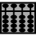
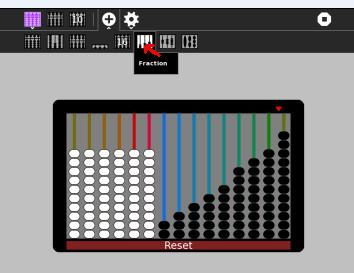
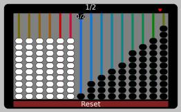
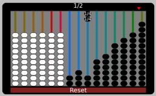
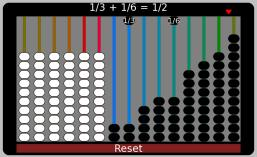
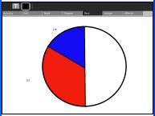
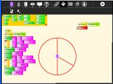
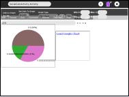
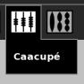
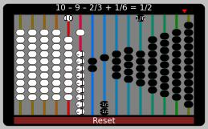

Fractions¶
Suggested for school years 6 - 8
The Fraction abacus¶
Start Abacus

,select the Fraction abacus.

Slide one of the 1/2 beads to represent 1/2

Another way to represent 1/2 is to slide half of another string of fraction beads, for example slide 2 of the 1/4 beads. That is (2 x 1)/4 = 2/4 = 1/2

How many ways can you make 1/2, remember you can use 2 strings eg. 1/3 + 1/6 = 1/2

If using just one string, only some of the strings of beads can be used to make 1/2. Which ones? Why?
Show that the solutions which use more than one string are correct, use the Lowest Common Denominator (LCD) method, for example for the case of 1/3 +1/6 = 1/2
1/3 + 1/6 =2/6 + 1/6 =(2+1)/6 =3/6 =1/2How do you know if you have found all the solutions?
Find all the ways to make 1/3 and 2/3
Other representations of fraction addition¶
Draw your solutions as pie charts, you can use Paint, TurtleArt, Socialcalc or Gnumeric in Gnome.



The Caacupé abacus¶
Load the Caacupé abacus

It can represent negative whole numbers and fractions. 1/2 can be represented as 10 - 9 - 2/3 + 1/6

How many different ways can you represent 1/2 , 1/3, 2/3
How do you know when you have found them all?
Similar to the Pie chart, can you think of a way to visually represent the addition of positive and negative fractions?
see the answersheet